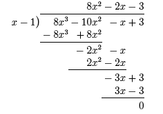
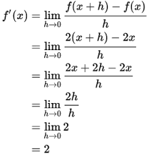

Indices and Surds is a topic that covers the laws of indices and surd form, i.e. xn * xm = xm + n.
Graphs and Transformations covers drawing f(x), f(x + a), f(x) + a, f(ax) and af(x)
Geometry covers finding the gradient, equation, length and mid-point of a linear equation along with parallel and perpendicular line equations, including using the equation m1 * m2 = -1
This topic involves expanding polynomials, i.e. x3 + 1, including the methods for finding their roots using either the Factor Theorem or the Remainder Theorem. This topic also includes polynomial division, i.e. -

Binomial expansion, such as expanding the equation (2x+ 5)5, including the use of Pascal's Triangle and basic algebra and using the result with a value for x to calculate approximate values for decimal numbers
This topic introduces differetial calculus, including from first principles. This is introduced through finding dy ⁄ dx. This is done for f(x) and progresses to first principles, thinking of it from a graphical perspective, eventually forming the equation:

Finally, it teaches about second order differential equations and stationary points, where the gradient is equal to 0.
This covers both arithmetic and geometric series how to calculate sequences using nth term. It also involves deriving the equations for both types of series
Exponentials is any equation in the form ax = y. Logarithms are such for the equation ax = y, loga(y) = x.
Circle geometry covers the equation of a circle, (x - a)2 + (y - b)2 = r2 where x and y are unknown variables, a and b are the x and y coordinates of the centre of the circle and r is the radius. It also involves calculating whether circles are touching or intersect.
This topic deals with the cosine and sine rule, a2 = b2 + c2 - 2bc cos(A) and sin(A) ⁄ a = sin(B) ⁄ b, the Pythagorean Identity - sin2(x) + cos2(x) = 1 and the area and angle in a segment and a sector, with an introduction to radians.
This topic introduces integral calculus and its application to the calculating of an area under a line on a graph.
This topic covers cosecant, secant and cotangent, along with arcsin, arccos and arctan, where:
This is then extended to cover their derivatives, graphs, domains and the Pythagorean Identities:
This topic covers the definition, domain and range of a function. It also covers composite and inverse functions and graphs for all the above. Finally, it covers the modulus function and combinations of the transformations found in C1.
This covers Euler's number e, the function ex, its inverse function and its logarithm, ln(x). It also covers the graphs of all these functions.
Further differentiation, of more difficult functions, i.e. ex, using the product rule, quotient rule and chain rule. The rules are:
The derivatives of the special cases, i.e. ex, are:
This topic introduces integral calculus and its application to the calculating of an area under a line on a graph.
Numerical methods are used to calculate the value of roots and integrals, using iterative functions and Simpson's Rule.